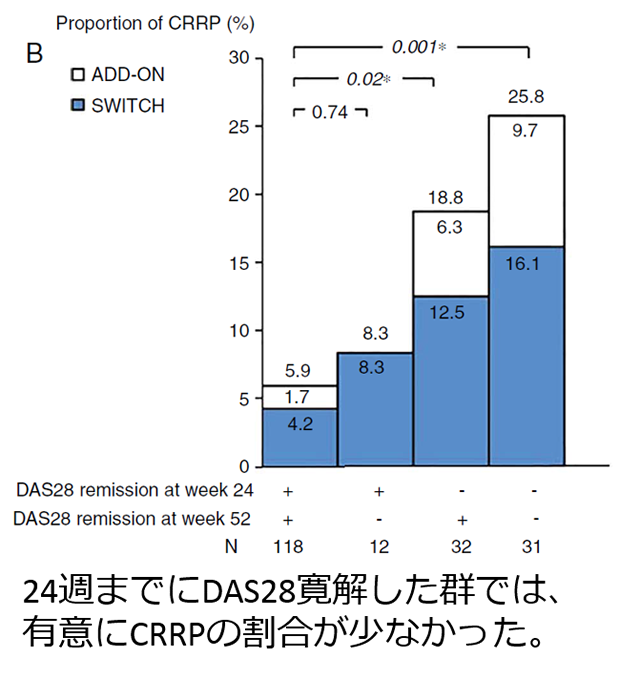
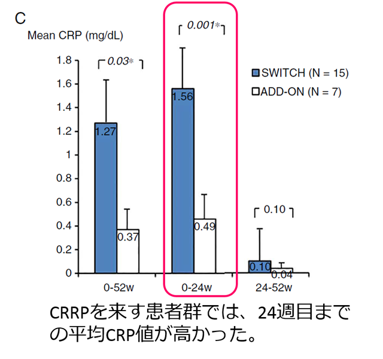

left
社外秘 研修資料
right
CRPを早期に低下させることで、関節破壊の急速な進展を抑制できる可能性がある（SURPRISE STUDY）
●
MTXによる治療に効果不十分（DAS28-ESR>3.2）で、生物学的製剤による治療歴のないRA患者233例をアクテムラ追加併用（ADD-ON）群と、MTXを中止してアクテムラ単独療法へ切り替えた（SWITCH）群に1：1に無作為割付けし、両群ともアクテムラ点滴静注用8mg/kg/4週を52週間投与した。


関節破壊抑制の面から見ても、しっかり効かせるには早期CRP陰性化が重要
Kaneko Y, et al. Ann Rheum Dis. 2016 Jan 5.